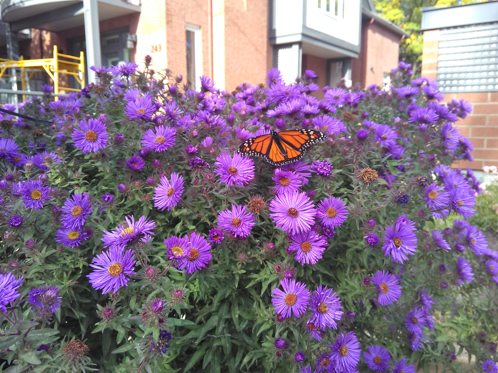

Back to Index Page

Central Ottawa Garden NetWork
Let's talk Gardening! Group gardens, home gardens, balcony, experienced, random (guerilla), street box, or want to get started! COGN is mainly working with Pollinator Gardens..
Keep in touch by e-mails & in person. March 2026 we've started meetups at Jack Purcell Community Centre. Hope to keep this going.
Connect cmurray22@proton.me
1. Share experiences, extra plants, resources, updates, etc.
2. Info & advice to start -- seeds & tips
- Group Gardens (always want volunteers)
- Frank Street Bee Butterfly Garden @frankstbbg
- Massine's Bee Butterfly Garden MacLaren just west of Bank
- Gladstone at Elgin 4x8 planter box (will try to affiliate this with St.Lukes Park Garden across the street)
- Electro-Pulse 501 Gladstone 4x8 planting (at Lyon)
- Centretown Community Association, Green Committee (CCA) Dundonald Park Garden Facebook group: Friends of Dundonald Park
- (CCA) St.Lukes Park Garden
- (CCA) Jack Purcell Community Centre Garden
- Knox Church, Elgin near Lisgar
- First Baptist Church has a planter box on Laurier near Elgin
- City Hall on Lisgar St. side
- Dalhousie Community Association (DCA) 755 Somerset W. Garden
- (DCA) Plant Bath Garden
- @OttawaGayGardenSociety north side of MacLaren St. between O'Connor & Metcalfe, other locations
- NAC Rooftop contact @OttawaGayGardenSociety)
- Lansdowne Gardens
- Glebe Annex Pollinator Garden
- Please tell us about other group pollinator gardens in Central Ottawa!
- Community Food Gardens info@JustFood.ca
- All individual gardeners welcome to connect with us
Join your local Community Association the logical hub where local people will seek help for gardening info & support.
Each CA has a Committee or person for gardens. COGN wants to encourage collaboration with these communities:
Working together = more fun!